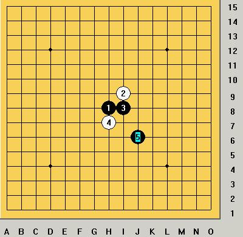

请高手指点 云月的这个5怎么防
首页
五子棋交流
#1 请高手指点 云月的这个5怎么防 作者：笑雨辰 发表时间：2008-10-16 1:54:37

［ 掌棋宣传员 于 2010-8-13 14:57:16 时花20金币送鲜花一朵］
#2 Re: 请高手指点 云月的这个5怎么防 作者：古筝 发表时间：2010-8-9 15:16:47
很遗憾。这个5没法防- -！但是白有多挺几步的走法- -！执黑的记忆不好的话会败！建议去下载云月终结地毯吧！
本论坛搜索就有了
#3 Re: 请高手指点 云月的这个5怎么防 作者：笑雨辰 发表时间：2010-8-10 9:01:51
回楼上，这个5方向有问题
老的杀法里有一路有盘端
我想问的就是那路变化。。
#4 Re: 请高手指点 云月的这个5怎么防 作者：裁决殿雪月 发表时间：2010-8-10 10:30:19
=======上图对应的爱五子棋谱代码如下，以便你拆解：========
h8i9i8h7j6i7k7
======================================================莫非是这个？
#5 Re: 请高手指点 云月的这个5怎么防 作者：潇洒 发表时间：2010-8-10 10:57:48
哪路变化有盘端？发下图
#6 Re: 请高手指点 云月的这个5怎么防 作者：水月 发表时间：2010-8-10 15:40:24
盘端的确有问题，我下过一次。。。我回忆一下看～
#7 Re: 请高手指点 云月的这个5怎么防 作者：水月 发表时间：2010-8-10 15:43:52
上班ing，一时回忆不起来了，说的应该是6-J8，7走K6，8-i6，9-j5的一路变化吧？
#8 Re: 请高手指点 云月的这个5怎么防 作者：gigiqi 发表时间：2010-8-10 20:59:45
08年的帖子吗。。。。。。。。。。
#9 Re: 请高手指点 云月的这个5怎么防 作者：淡红的秋樱 发表时间：2010-8-12 22:24:43
ShowPost.asp?ThreadID=4785
重复贴。